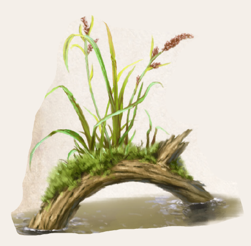

In nordaventurischen Sümpfen und Hochmooren wächst das Schlinggras. Es wird bis zu anderthalb Schritt hoch und steht häufig in kleinen Gruppen zusammen. Das Gras bildet keine Horste, sondern entwickelt sich entlang seiner weit verzweigten Wurzeln, die hier und da an die Oberfläche treten und weitere Halme ausbilden. In Frühjahr und Sommer ist es hellgrün, im Herbst zeigt es eine rote Maserung. Schlinggras wurzelt gerne auf verrottendem Holz, das es in Feuchtgebieten zur Genüge gibt, vor allem auch entlang von Menschen angelegten Bohlenwegen. Warum Schlinggras sich blitzschnell um Beine oder sonstige Körperteile eines unachtsamen - menschlichen oder tierischen - Wanderers schlingt, ist bislang ungeklärt. Haben Halme oder Wurzeln jedoch einmal zugepackt, halten sie ihre Beute unerbittlich fest. Häufig zieht der jähe Angriff einen Sturz nach sich, und ist das Opfer einmal eingesunken, greifen unterirdische Wurzelausläufer des Grases an. Im ungünstigsten Fall zieht das die Aufmerksamkeit weiterer Schlinggräser an. Glücklicherweise lassen sich die Halme mit einem scharfen Messer oder gar Schwert leicht durchtrennen. Schwieriger ist dies bei Wurzeln, die unter der Oberfläche angreifen.
Bislang ist keine alchimistische Verwendung für Schlinggras bekannt. Da das frische Gras sehr biegsam ist, eignet es sich aber zur Herstellung von allerlei Gefäßen, vor allem aber von Blasrohren. Dazu wird es um einen geraden Ast oder beispielsweise einen Kürbis gewickelt und mindestens 5 Minuten lang sorgfältig getrocknet. Nach Ablauf dieser Zeit ist das Gras steinhart und kann von seinem Formgeber abgezogen werden. Solange es nicht nass wird, sind Blasrohr oder Schale gut haltbar.
Alternative Namen: Schlinger (wie das Ungeheuer)
Verbreitung:
Landschaftstyp: Sümpfe, Marschen und Moore
Regionen: Nördliche Feuchtländer
Suchschwierigkeit: -4
Bestimmungsschwierigkeit: -4
Anwendungen: 1/1/1/1/1/1
Wirkung:
Roh:
Berührung: Die Halme packen zufällig (7-20 auf W20) nach vorbeigehenden Lebewesen und winden sich um deren Gliedmaßen, um sie ins Moor zu ziehen.
Dem Griff der Pflanze kann mit einer um -2 erschwerten Probe auf AW entgangen werden.
Sobald sie jedoch erfolgreich zugepackt hat, gelten für den Gefangenen die Status Eingeengt und Fixiert.
Die Pflanze benötigt 2 KR, um das Opfer ins Moor zu ziehen.
Danach gilt für jede Attacke auf die im Moor liegenden Schlingen ein Sichtmodifikator der Stufe 4.
Einatmung: keine
Verzehr: keine
Verarbeitet: siehe Rezepte
Preis: 0,2 / 0,3 Silbertaler
Rezepte:
Pflanzliche Hilfsmittel: Blasrohr
Alltagsarzneien und Volksbrauchtum:
Es gibt viele Theorien über den Greifmechanismus des Schlinggrases.
Da es augenblicklich erschlafft, sobald man es abtrennt, vermuten einige die Quelle der Kraft im dichten Wurzelwerk der Pflanze.
Um es vollständig aus dem Moor zu lösen und zu studieren, müsste vermutlich ein ganzer Landstrich trockengelegt werden.
Bisher gibt es keine Berichte von einer solchen Operation, obwohl - oder weil - viele vor magischen oder gar dämonischen Ursprüngen warnen.
Haltbarkeit:
Roh: siehe Haltbarmachung